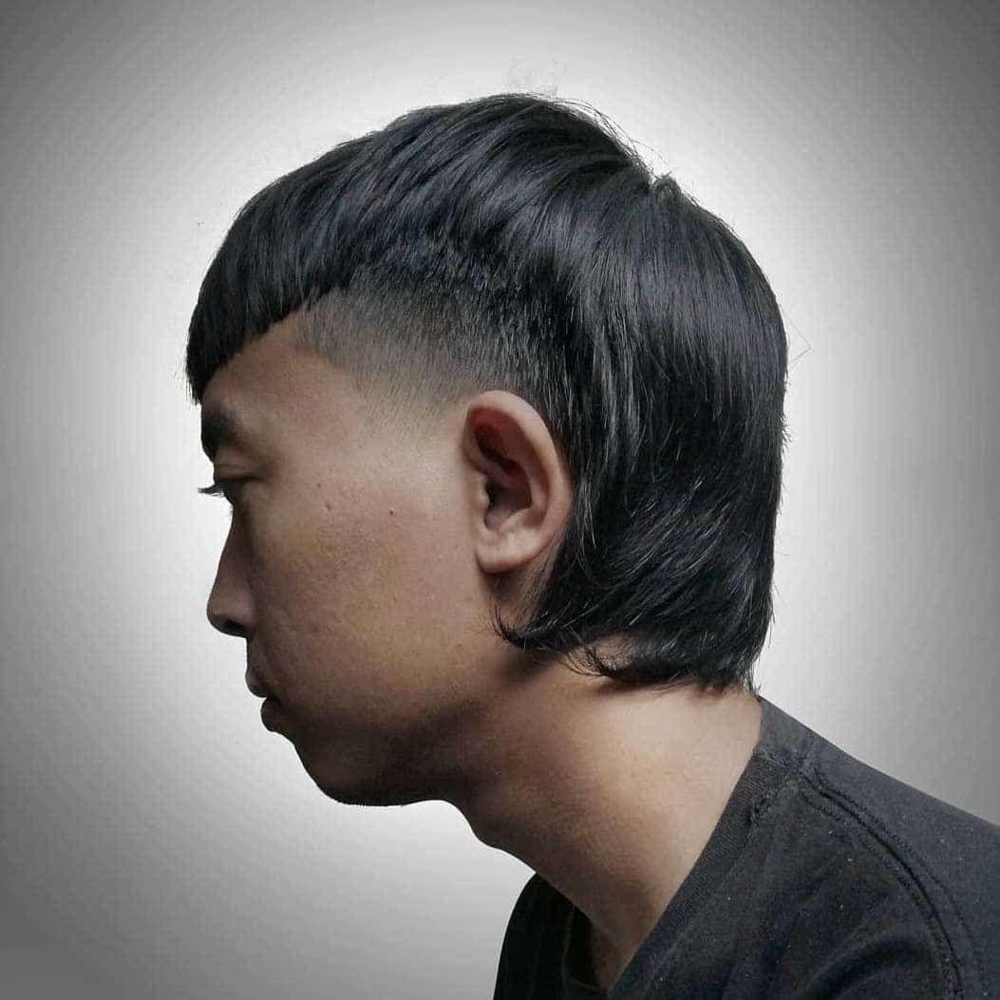
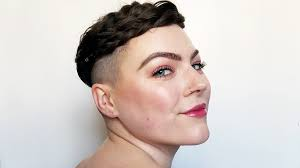
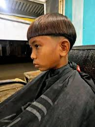
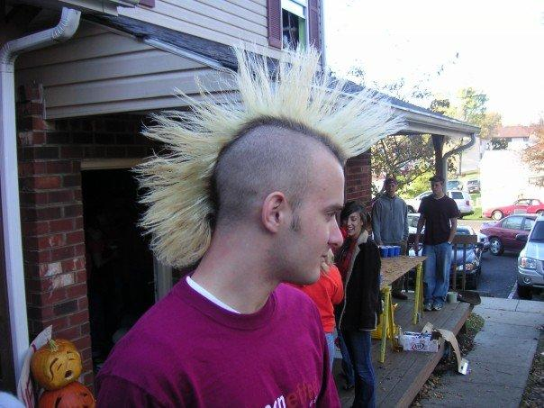

Selamat Datang di Barbershop Dika
Kami Menawarkan Model Potongan Rambut Yang Menjadi Tren anak Dewasa Saat Ini.
Model Mullet

Potongan tipis samping,dan tebal di bagian tengah
Model Undercut

Potongan tipis bagian samping,dan tengah potong 2 jari
Model Batok

Potongan tipis melingkar di tepi rambut,yang membuat tampilan rambut seperti batok
Model french crop

gaya rambut dengan poni pendek lurus horizontal. Rambutnya berlapis-lapis sekitar 2–5 cm di seluruh bagiannya.
Model hawk

Potongan anak metalmemotong habis bagian sisi kiri dan kanan hingga menyisakan bagian tengahnya saja dari depan hingga belakang